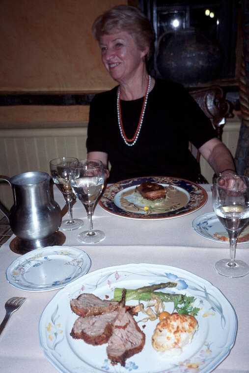
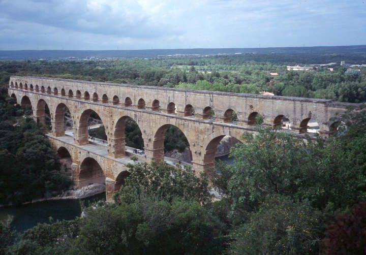
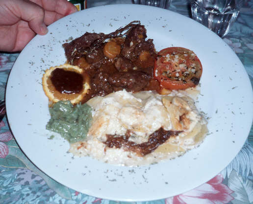
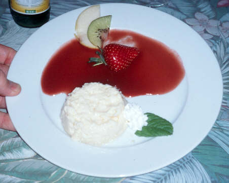
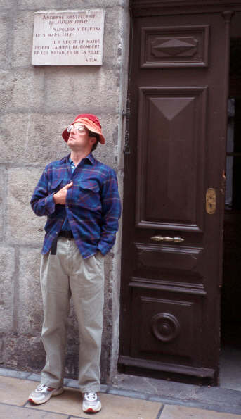
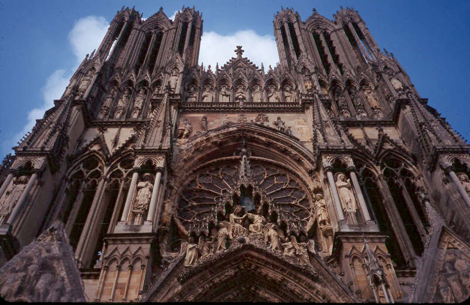

|
|
In May of 2001, I joined a group from Europe Through the Back Door on a journey through small villages in France. The trip was a lot of fun, as expected. But there were some unexpected delights. Wonderful regional food! Spectacular scenery! Cycling paradise! Playing boules (throwing heavy steel balls, distantly related to bowling). History from Troglodyte to medieval kings to sobering reminders of the horror of war. But let's get to the story.
On my flight from Seattle to London, I asked the flight crew if I could visit the cockpit. Late in the flight, they said I could! The pilot, copilot, and navigator were very friendly, giving me a tour of the London area from the air. It was great fun landing while sitting in the flight deck observer's seat. I doubt that will happen again, due to recent events...
After a second flight to Paris and a train to Chartres, I meet the gang an hour late. Chris was already explaining a few logistics and preparing for a walk around Chartres. Our tour was to cover nearly three weeks and many of France's regions.
 Franois, not expecting any tips from ETBD travelers,
coerces Ted and Al to wash his coach instead.
Franois, not expecting any tips from ETBD travelers,
coerces Ted and Al to wash his coach instead. |
 Our first French dinner in Chinon. First course: quail with sauce, lettuce. |
 Second course: trout with avocado, tomato, shrimp, scallops, and sweet lemon sauce. |
After dinner, I wandered on my own, enjoying the evening. But I forgot that Al, my roommate, had the only key. Oops, I was stuck outside the high-walled hotel. Fortunately, Chris, Kristen, and Franois happened by before I had to deploy the retractable bat hook. (Note to self: always tote ubiquitous bat hook, preferably in money belt!)
 Intrepid Loire Valley explorers negotiate the flooded road near Usse's "Sleeping Beauty" chateau.  Aspiring cyclists, after perspiring along the Loire, conspire to
replenish reserves. Kristen (asst. guide) and yours truly in front
row.
Aspiring cyclists, after perspiring along the Loire, conspire to
replenish reserves. Kristen (asst. guide) and yours truly in front
row. |
 Hmmm... "European" in that thing? Risking un-Chartres territory? |
It was a wonderful introduction to cycling in France. There was very little traffic on the narrow roads. We rode to Langeais with its moated castle, then a bit further to Villandry chateau and it's meticulous huge gardens. After hedging on how long it takes to keep the bushes trimmed, Ted and I left the bus-bound group, and enjoyed a muscle-bound bike ride all the way back to Chinon.
 Canoeing with Phil past an old fortress on the Dordogne. |
 Franois provided a first-class coach experience.
Franois provided a first-class coach experience.
|
One Sunday morning I heard the organ playing in one of the 7 chapels high on the cliff. I rushed up to hear a poorly played Bach's Little Prelude and Fugue. But it brought back old memories of playing that same piece. Later, we visited the deep caves Grotte de Rouffignac. Engravings of mammoths, bison, and others by prehistoric man were fascinating. On the return trip we had an interesting lunch of duck gizzards and strawberry tart. Opinions were mixed on the gizzards (I rather enjoyed them), but unanimous on the tart!
We stopped in Conques, with its medieval exterior tympanum of the Last Judgment. Driving through a hailstorm, we continued to La Malene in the Gorg du Tarn. Wow, what a spot this place is! Al and I were given a spectacular room in a 15th century chateau. Vicky and Bill (the love birds) enjoyed a similar room. The ornate antique furniture was much fancier than I'd expect on a Rick Steves trip. I took a long hike up river on the trail, until I ran out of time. Upstream I could see a town far from any road -- a private domain for some lucky owners. Dinner at the hotel was a 3 hour, 4 course fabulous event. Unfortunately, we had to suffer through this type of dinner two nights in a row! I guess someone has to do it. You'll have to suffer looking at it.
 Al enjoys his bacon and pear in a sauce, while I have saffron pearl barley salad, dried tomato, and smoked duck fillet. |
 Loretta can't bear to look at my lamb and cauliflower. Nope, she isn't wearing the saffron pearls! |
 Loretta anticipates her sorbet dessert, while I go for the entire assortment. Later, I finish several other desserts. I suspect I'm pregnant but the morning after my stomach had shrunk to only 150% of its normal size. |
 Canoeing the Gorg du Tarn. |
On our day in the Gorg du Tarn, some of us floated the river. Darn, this Tarn is
rugged! We gorged our eyes, and dropped our jaws at the scenery.
 | |
|
This Mediterranean town had more traffic than the very small
villages of the rest of the tour. But after a day on the beaches I grew to
enjoy it as much as the smaller villages. I went on a long walk along amongst the calanques. Some of the trail was more of a scramble. I dropped down to the bottom of the third calanque to the beach, and enjoyed a particularly lovely example of French "scenery" for quite some time. While waiting for her to turn over, I watched some rock climbers. |
 Mediterranean coastline near Cassis.
Mediterranean coastline near Cassis.
| |
|
We moved on to Aix du Provence, which wasn't nearly as village-like as
the rest of the trip. The old core portion of town is surrounded by lots of
traffic. But it was not a long stop, and we moved on to Domaine de la
Citadelle. Here, the spectacularly beautiful Perrine was our guide of the winery.
Then it was on to Roussillon, a quiet artist town with red ocre cliffs.
Ah... now back in a tiny village, I felt wonderful again! I took a walk along the ocre area, and wandered the interesting art galleries. Mostly I soaked up the village ambience. For lunch it was just a bagette and water. In fact, this was all my lunch for several days on the trip. It was a welcome change from the fantastic, but rich food. By evening, I was ready again for another delicious and beautiful dinner. |
 Driver Franois and friend bemoan the mouse is gone in Roussillon. |
|
 First course: Salad with olive oil, aged red wine vinegar, dijon mustard, spices de Provence, poached egg on toast. |
 Second course: Beuf (beef) -- cheek portion. Third course (not shown): goat cheese, whole peppercorn fromage. |
 Fourth course: Coconut custard, raspberry sauce, strawberry, kiwi, and apple slices. Oops, bumped the strawberry out of alignment! |
|
We also had the ultimate picnic lunch at Bonneaux, with items many had
gathered at the market. Chris and Kristen outdid themselves this time. As
was
my pattern throughout the trip, I ate way too much. Part of the digestion time
I watched some old men play boules. Later that evening, Clare, Bev, Chris,
Kristen and I played our own game of boules. Bev amazed the rest of us
boules fools
with her skill. Fortunately I was on her team! |
 Picnic prepared by Kristen and Chris in "sunny Bonneaux". |
 Howard may be excited about his dinner, but look at my dessert crepe! |
 Napoleon stopped by Sisteron for lunch one day. For that he gets his own plaque in town. Big deal, I was here too! After lunch I had plenty of plaque as well. Bet he didn't have that distinctive middle-age money belt bulge... | ||
| The next day we drove to Sisteron. The town is next to a river, with incredible cliffs on the far side. Near by was a huge castle, restored after the war. Then it was on to Annecy for three nights. One day we drove up to Chamonix. I took the lift to Auguille du Midi and waited for over an hour for the weather to clear. At last, I had a 15 second window and snapped a picture of Mont Blanc. |
 Annecy medieval jail at night |
 Mont Blanc from Auguille du Midi. |
 Franois and your scribe, two boneheads, fight over Beaune bread. |
 Chris and Kristen provide support on a bad-hair day. I was antsy about seeking amnesty from Annecy shopping at the marbleous 1922 St Francis de Sales church above town. |
We also stopped in Vezelay to see the Romanesque Basilica -- a fantastic creation, huge, plain decor, airy, and bright. Then it was off to Paris and the end of the tour. We were treated to one last fabulous dinner, a toast of champagne, and a one-hour boat ride on the Seine. A superb ending to a superb trip.

 Ah... but there were 10 days before my plane departed for the homeland.
So I hopped on a train to Reims. The cathedral interior
soars to the heavens; its exterior is a cacophony of flamboyance.
Ah... but there were 10 days before my plane departed for the homeland.
So I hopped on a train to Reims. The cathedral interior
soars to the heavens; its exterior is a cacophony of flamboyance.I went to Bruges and listened to the passionate Rik exalt the Belgian cuisine. His dog was definitely in charge of the place, keeping all intruders at bay. Rik made a delicious Belgian waffle. Wow!
Then on to Normandy and the D-day beaches. These were very moving, especially the best museum I've ever seen -- Le Memorial in Caen. I spent a two days cycling. The empty one-lane roads are ideal for a bike. The Bayeaux tapestry is also amazing. I spent an afternoon and evening at Mont St Michel.
My last two days in Paris were a musical extravaganza. I heard the organs at St Sulpice ( Daniel Roth again!), La Trinite, St Eustache, and Sacre-Coeur.
Ah, what a trip and what memories...
The rest of the year was spent wandering the Cascade and Olympic mountains.
{kind=link}
{kind=link}
{kind=link}
{kind=link}
{kind=link}
{kind=link}
{kind=link}